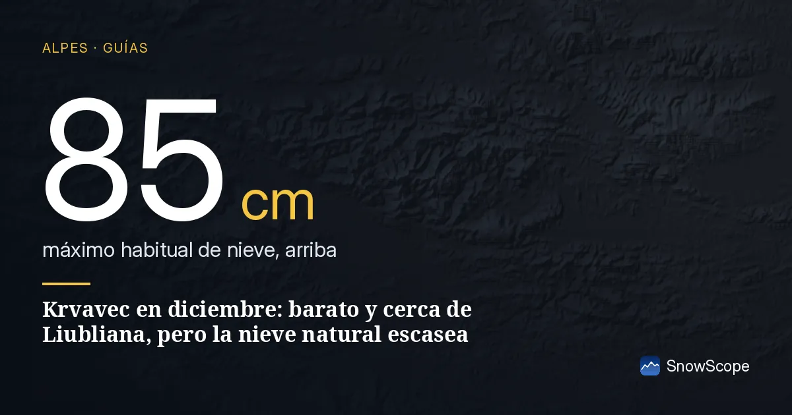

Krvavec en diciembre: barato y cerca de Liubliana, pero la nieve natural escasea
Krvavec es la estación a la que se llega desde Liubliana antes del desayuno, y sus precios están entre los más bajos de esta serie: 47 EUR el día adulto y 205 EUR los 6 días. Lo difícil es el histórico de nieve. Un 15 de diciembre típico, la media montaña (1718 m) tiene 13 cm en nuestros 46 inviernos, y en 11 de ellos el suelo estaba pelado ese día.
Consulta la previsión de nieve en tiempo real de Krvavec en la app SnowScopeEspesor de nieve, alertas de nieve polvo y mapa 3D, gratis.
Lo que se dice de diciembre aquí
La idea común es que Krvavec, con remontes hasta 1963 m, es lo bastante alto para empezar pronto. Es alto para Eslovenia, y el dominio cartografiado está bien: 16 km de pistas y 13 remontes. Pero la nieve que cae no es la nieve que se queda, y en esta cara sur soleada de los Alpes diciembre a menudo pierde lo que trajo noviembre.


Lo que muestran de verdad 46 inviernos
La semana del 15 al 21 de diciembre solo el 24 % de nuestros inviernos tenía 30 cm o más a media montaña, y el 28 % en la cima. En Navidad, el 28 % y el 33 %. El primer día habitual con 30 cm a media montaña es el 7 de enero.
Peor aún, la tendencia es fuerte. La media de diciembre a media montaña bajó de 15 cm en los primeros 15 inviernos a 4 cm en los últimos 15. En Navidad, el 47 % de los primeros inviernos tenía allí 30 cm, frente al 13 % de los recientes. El invierno pasado no había nieve natural el 15 de diciembre.
La parte barata
En la tarifa oficial 2026-27, el día adulto cuesta 47 EUR y el forfait de 6 días 205 EUR, con un precio de preventa de 45 EUR el día. Muy por debajo de los glaciares austriacos. Si las pistas están preparadas, un día de diciembre aquí sale muy bien de precio; el histórico solo dice que en muchos inviernos la nieve natural sola no basta en diciembre.
Dónde encaja el Mölltaler Gletscher
Para una semana segura en diciembre, la opción alta más cercana de nuestra lista es el Mölltaler Gletscher, en Carintia: 66 cm en su remonte más bajo (2103 m) un 15 de diciembre típico y el 91 % de inviernos con 30 cm la semana del 15 al 21 de diciembre. Cuesta más: 332 EUR por 6 días en temporada baja según su última tarifa publicada (2025-26).
Un plan sensato para quien vive en Eslovenia: Krvavec para días cortos cuando su propio parte de nieve es bueno, y el glaciar para una semana planificada.
La letra pequeña
Nuestras cifras describen la nieve natural en el suelo a las alturas de la estación; no dicen nada de lo que la estación prepara en sus pistas. Antes de comprar un forfait de diciembre aquí, mira el parte de nieve y pistas en directo de la estación, y considera una apuesta cualquier reserva hecha con meses de antelación.
Consejos para esquiadores
- Mira el parte de pistas el mismo día: la nieve natural sola dio 30 cm a media montaña a mediados de diciembre solo en el 24 % de nuestros inviernos.
- En diciembre compra por días en vez de un forfait de 6 días, salvo que el parte muestre una buena base.
- Para una semana fija antes de Navidad, sube más: el Mölltaler Gletscher es la opción segura cercana.
- Fuera de pista tras una nevada poco habitual: lee primero el boletín de aludes esloveno.
Más mapas (sitios externos)
Referencias y créditos
- Krvavec: official lift-pass prices (2026-27), checked 13 November 2026 rtc-krvavec.si/cenik-urnik
- Mölltaler Gletscher: official lift-pass prices (2025-26), checked 13 November 2026 www.moelltaler-gletscher.at/en/price-list/winter/moelltaler-gletscher
Sobre estas cifras
Cifras de nieve: histórico de nieve de SnowScope, 46 inviernos pasados (1980-81 a 2025-26) a las alturas de la estación, corregido por altitud (una estimación para una zona, no partes de la estación); «buena nieve» = 30 cm o más en el suelo de media en la semana. Mapa: nuestro espesor habitual el 15 de diciembre repartido sobre el relieve según la altura. Pistas y remontes: cartografía OpenSkiMap. Forfaits: tarifas oficiales de las estaciones, comprobadas el 13 de noviembre de 2026; los precios pueden cambiar.
Boletines oficiales de aludes: ARSO – Slovenian Environment Agency
Citar este informe
Para investigación, docencia o prensa: cifras y gráficos reutilizables libremente bajo CC BY 4.0 con esta cita.
SnowScope (2026), Krvavec en diciembre: barato y cerca de Liubliana, pero la nieve natural escasea, https://snowscope.app/blog/es/2026/11/krvavec-december-skiing-ljubljana-honest-snow.html, consultado el 2026-11-14
SnowScope (Atlas Labs). (2026, November 14). Krvavec en diciembre: barato y cerca de Liubliana, pero la nieve natural escasea. SnowScope snow reports. https://snowscope.app/blog/es/2026/11/krvavec-december-skiing-ljubljana-honest-snow.html
BibTeX
@misc{snowscope2026krvavecdecemberskiinglju,
author = {{SnowScope (Atlas Labs)}},
title = {Krvavec en diciembre: barato y cerca de Liubliana, pero la nieve natural escasea},
year = {2026},
month = nov,
howpublished = {\url{https://snowscope.app/blog/es/2026/11/krvavec-december-skiing-ljubljana-honest-snow.html}},
note = {Published 2026-11-14 20:54 UTC; accessed 2026-11-14}
}· CC BY 4.0 · Métodos, datos y herramientas →
Krvavec: nieve y temperatura según la altura, este invierno vs el pasado (herramientas) →
Sigue Krvavec
Gratis: un aviso cuando llega la nieve y la previsión cada mañana.